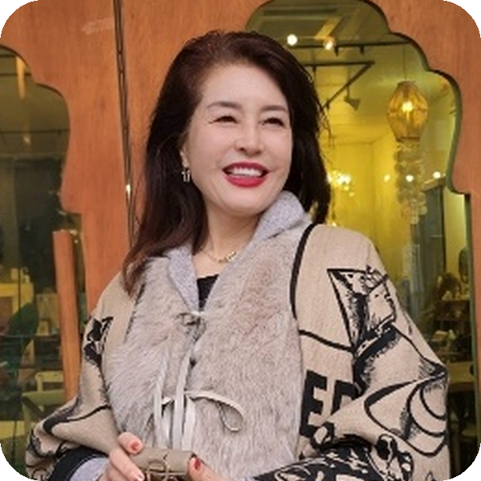
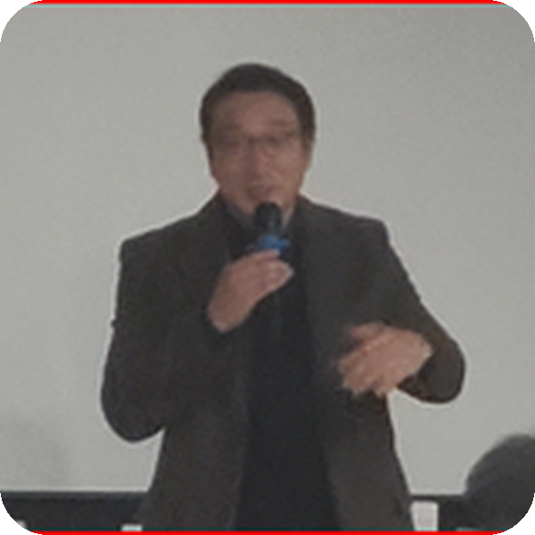
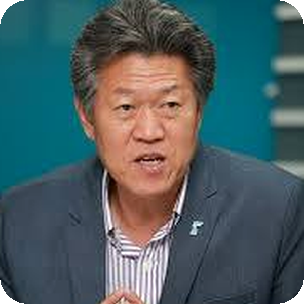
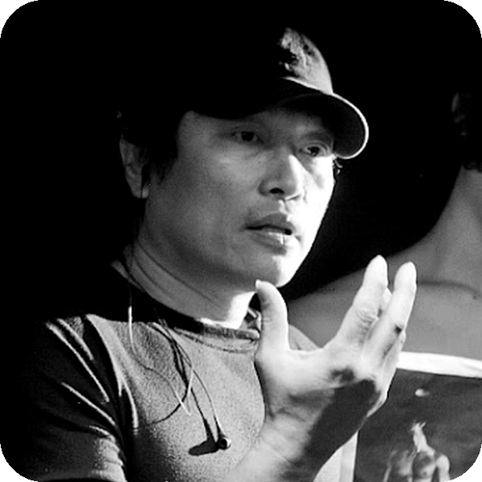
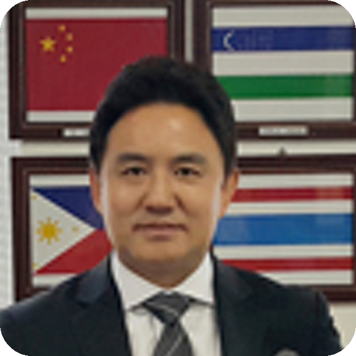
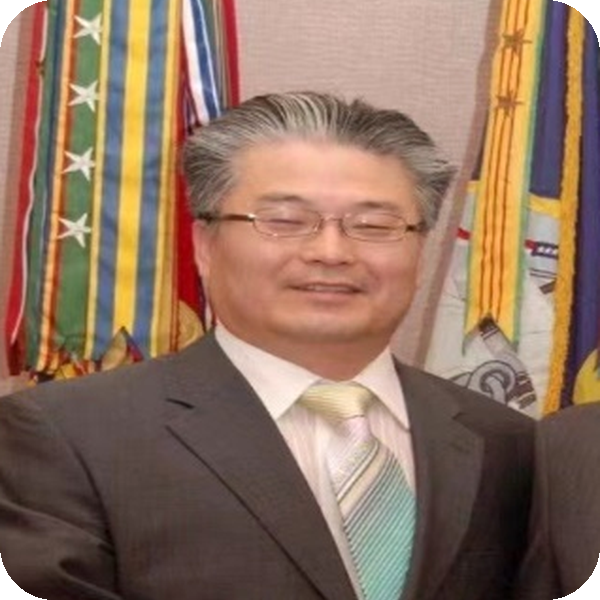
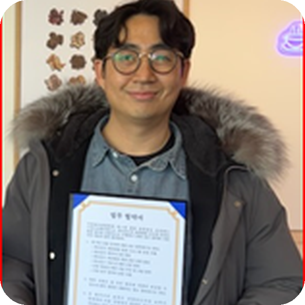
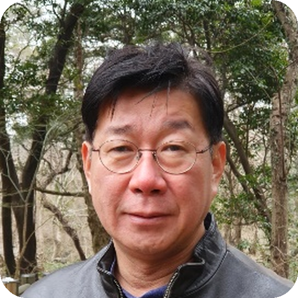

Team & Partners
PUBLIC RELEASEEO Foundation, EO Global 및 통일TV의 핵심 운영진과 자문 인력은 역할·경력·책임범위에 대한 사실 확인 및 공개 동의가 완료된 범위에서 공식 채널을 통해 공개합니다. 본 백서에 실명으로 기재되지 않은 인력은 공식 공개가 완료된 것으로 간주하지 않습니다.
Advisory Board
EO Advisory Board는 Foundation 이사회나 토큰 보유자의 의사결정기구가 아니라, 사업과 생태계의 주요 전문영역에 대해 독립적인 의견과 실무 경험을 제공하는 자문 네트워크입니다.
Strategy, Infrastructure & Business
사업전략 · 인프라 · 서비스 운영김홍기
현 에너지포유 대표이사 · 전 삼성엔지니어링 부장
에너지·인프라 연계, 기업경영, 신사업·기술융합 자문
차준완
통일TV 방송위원 · 건축·건설 및 산업 현장 경력
공간·인프라·방송 사업 연계 관점의 프로젝트 자문
김세현
가가그룹 의장 · 기업·영농조합 운영 경력
사업운영 및 지역 기반 프로젝트 구조 자문

안성남
한국서비스경영연구소 소장 · 경영학박사
서비스 운영, 교육, 고객경험 및 사업관리 자문
Media, Culture & Experience
미디어 · 콘텐츠 · 문화 · 경험
김풍운
인천광역시관광협의회 부회장 · 콘텐츠 전략 경력
관광·디지털미디어·블록체인 콘텐츠 생태계 융합 자문

진천규
통일TV 대표 · 전 한겨레신문 사진기자
한반도 미디어·콘텐츠 기획 및 현장형 스토리텔링 자문

김응택
광고·영상 제작 및 대형 문화행사 연출 경력
글로벌 콘텐츠 기획, 엔터테인먼트, 브랜드·마케팅 자문
이두식
한국서가협회 이사 · 서예전람회 심사 경력
전통문화·예술 콘텐츠 및 문화자산 연계 자문
Global Expansion & Partnerships
글로벌 확장 · 마케팅 · 파트너십
조우상
아시아모델협회 회장 · 아시아문화페스티벌 조직위원장
K-콘텐츠·패션·인플루언서 IP 및 글로벌 유스케이스 자문
김형년
교육재단 대외협력 및 교육기업 마케팅·영업 경력
교육사업, 브랜드 확장, 영업·마케팅 전략 자문

박세환
단동 지역 무역특구 한국관 운영 및 문화교류 경력
동북아 네트워크, 교류사업, 지역 파트너십 자문
김성열
오길비 코리아·금강기획 등 광고·브랜드 경력
브랜드 포지셔닝, 광고 커뮤니케이션 및 캠페인 자문
Token Economy, Finance & ESG
Tokenomics · 재무 · 회계 · ESG
김우식 · Daniel Km
EFFIBAR Korea 대표 · 크립토 이코노믹스 리서치 경력
유틸리티·거버넌스 토큰 구조와 공급·수요 모델 자문

임건묵
GM’s Consulting 대표 · 전 Motorola Korea CFO · AICPA
재무관리, 회계, IFRS 및 경영관리 체계 자문
김종철
CPA · ESG·탄소중립 및 파트너십 자문 경력
회계 투명성, ESG 프레임, 글로벌 투자·파트너십 자문
실명·직함·경력·자문 역할은 사실 확인과 당사자 공개 동의가 완료된 범위에서만 공식 공개합니다. 소속기관 표기는 해당 기관의 EO Token 공식 후원·승인·파트너십을 의미하지 않습니다.
Partner Disclosure Principle
계약, MOU 또는 공식 협약이 객관적으로 확인된 파트너만 실명으로 표기합니다. 협의·제안 단계의 기관은 공식 파트너로 표시하지 않습니다.
| PUBLIC DISCLOSURE STATUS EO Foundation 설립 관할지역, 실명 Team 프로필, 공식 파트너 목록, Token Sale Terms 및 Legal Notice는 사실 확인과 필요한 법률·규제 검토가 완료되는 시점에 공식 채널을 통해 별도 공개합니다. 미확정 기관·인력·조건은 본 백서에서 확정 사실로 간주하지 않습니다. |